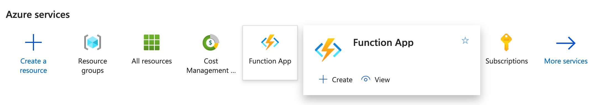
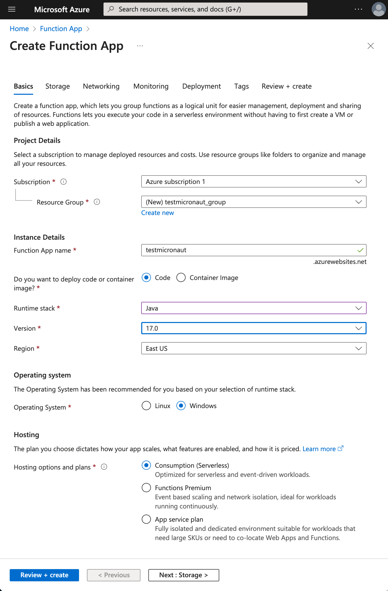
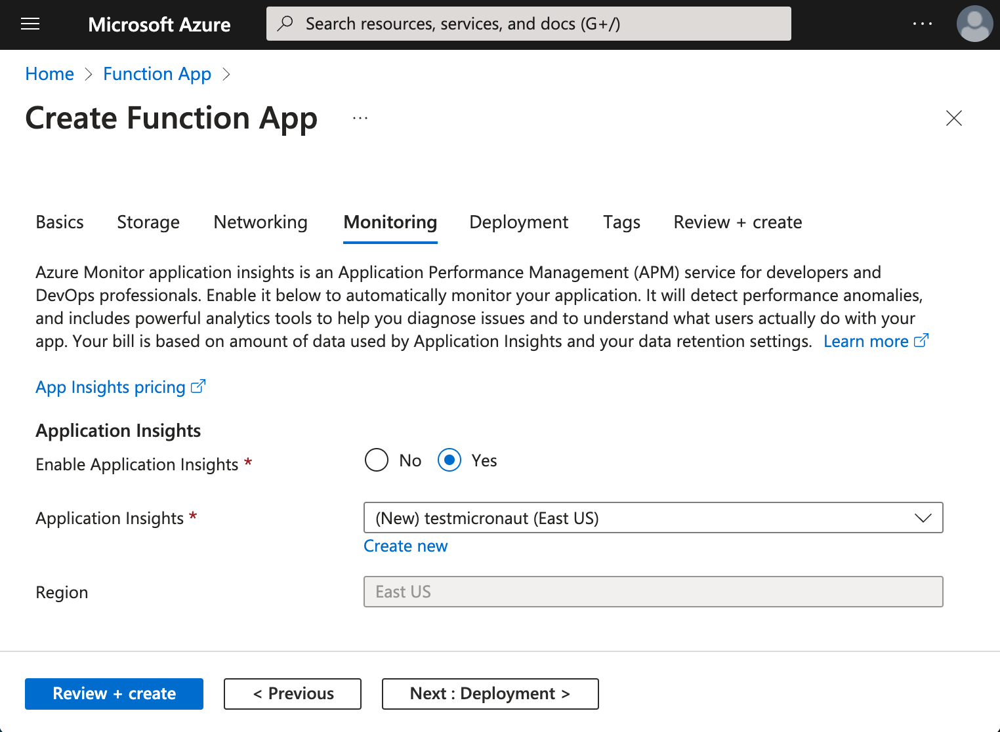
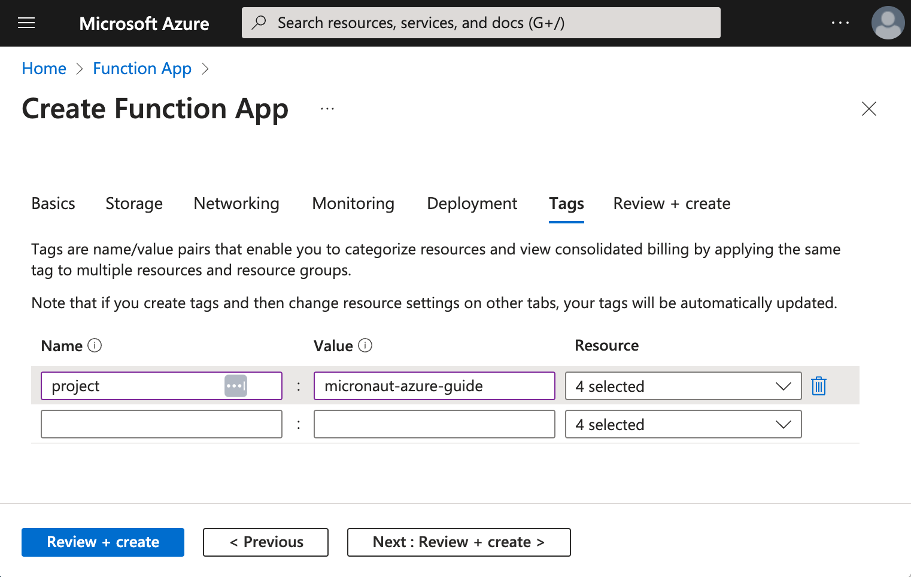
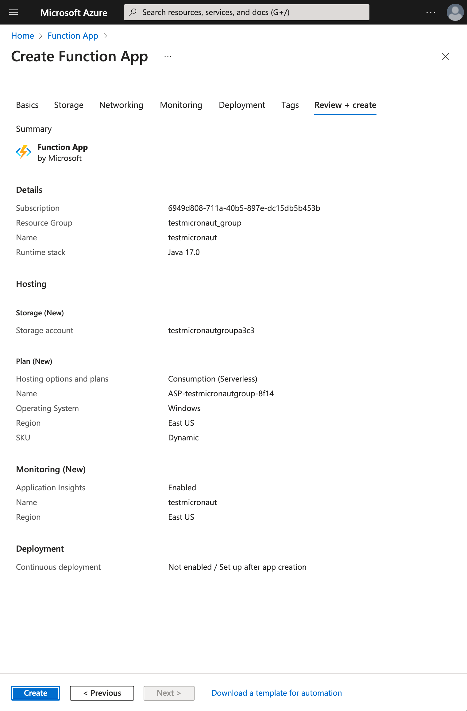

Micronaut Azure HTTP Functions
Learn how to create an Azure HTTP Function with the Micronaut framework
On this guide
In this section
Getting Started
In this guide, we will create a Micronaut application written in Kotlin.
What you will need
To complete this guide, you will need the following:
-
Some time on your hands
-
A decent text editor or IDE (e.g. IntelliJ IDEA)
-
JDK 21 or greater installed with
JAVA_HOMEconfigured appropriately
Solution
We recommend that you follow the instructions in the next sections and create the application step by step. However, you can go right to the completed example.
-
Download and unzip the source
Writing the Application
Create an application using the Micronaut Command Line Interface or with Micronaut Launch.
mn create-app example.micronaut.micronautguide \
--features=azure-function \
--build=gradle \
--lang=kotlin \
--test=junit|
Note
|
If you don’t specify the --build argument, Gradle with the Kotlin DSL is used as the build tool. If you don’t specify the --lang argument, Java is used as the language.If you don’t specify the --test argument, JUnit is used for Java and Kotlin, and Spock is used for Groovy.
|
The previous command creates a Micronaut application with the default package example.micronaut in a directory named micronautguide.
If you use Micronaut Launch, select Micronaut Application as application type and add azure-function features.
|
Note
|
If you have an existing Micronaut application and want to add the functionality described here, you can view the dependency and configuration changes from the specified features, and apply those changes to your application. |
Azure CLI
Install the Azure CLI.
Azure CLI is a set of commands used to create and manage Azure resources. The Azure CLI is available across Azure services and is designed to get you working quickly with Azure, with an emphasis on automation.
Azure Functions Core Tools
Install the Azure Functions Core Tools.
Azure Functions Core Tools includes a version of the same runtime that powers Azure Functions and can run on your local development computer. It also provides commands to create functions, connect to Azure, and deploy function projects.
Function
The created application contains a class that extends AzureHttpFunction.
NOTE: Missing source `Function`.When you write a Micronaut Azure HTTP function, you write your application as you normally would when developing outside of Azure Functions. That is, you create routes with classes annotated with @Controller. The above class bridges both worlds. It adapts from an Azure request to a Micronaut HTTP request, and based on the route, it delegates to the appropriate Micronaut controller.
Controller
The generated application contains a Controller that exposes two routes (GET and POST):
NOTE: Missing source `DefaultController`.-
The class is defined as a controller with the @Controller annotation mapped to the path
/default. -
The @Get annotation maps the
indexmethod to an HTTP GET request on/default. -
By default, a Micronaut response uses
application/jsonasContent-Type. We are returning a String, not a JSON object, so we set it totext/plainwith the@Producesannotation. -
The @Post annotation maps the
postMethodmethod to an HTTP POST request on/default. -
Annotate the class with
@Introspectedto generateBeanIntrospectionmetadata at compilation time. This information can be used, for example, to render the POJO as JSON using Jackson without using reflection.
Tests
The generated application contains a test that shows how to write Micronaut Azure HTTP Function tests.
NOTE: Missing source `DefaultFunctionTest`.-
Instantiating the function starts the Micronaut application context.
Testing the Application
To run the tests:
./gradlew testThen open build/reports/tests/test/index.html in a browser to see the results.
Running the Application
The generated application includes the Azure Functions plugin for Gradle.
To run the application, use the ./gradlew azureFunctionsRun command, which starts the application on port 8080.
You can invoke the GET route:
curl -i localhost:7071/api/defaultHTTP/1.1 200 OK
Date: Sat, 08 May 2021 03:55:11 GMT
Content-Type: text/plain
Server: Kestrel
Transfer-Encoding: chunked
Example Responseor the POST route:
curl -i -d '{"name":"John Snow"}' -H "Content-Type: application/json" -X POST http://localhost:7071/defaultHTTP/1.1 200 OK
Date: Sat, 08 May 2021 03:57:56 GMT
Content-Type: application/json
Server: Kestrel
Transfer-Encoding: chunked
{"returnMessage":"Hello John Snow, thank you for sending the message"}Create Azure Function App
Create a Function App in the Microsoft Azure Portal. If you prefer, use the Azure CLI.

Basics | Create Function App
Select:
-
Runtime stack: Java
-
Version: 17
-
East US
-
Operating System: Windows
-
Plan type: Consumption

Monitoring | Create Function App
Enable Application Insights.

Tags | Create Function App

Review & Create | Create Function App

Deploy Azure Function App
Log in to Azure from your terminal.
az loginEdit build.gradle. Set the azurefunctions extension values to match the values you introduced in the Microsoft Azure Portal.
Use ./gradlew azureFunctionsDeploy to deploy your Azure Function App.
./gradlew azureFunctionsDeploySuccessfully updated the function app testmicronaut.
Trying to deploy the function app...
Trying to deploy artifact to testmicronaut...
Successfully deployed the artifact to https://storageaccountexamp9ec5.blob.core.windows.net/java-functions-run-from-packages/subscriptions-9825e0b9-244a-4eeb-9194-d3e8123fe1a0-resourceGroups-examplemicronaut-providers-Microsoft.Web-sites-testmicronaut-testmicronaut.zip
Successfully deployed the function app at https://testmicronaut.azurewebsites.netIf you visit https://testmicronaut.azurewebsites.net/, you will get an HTML page informing you that the function is up and running.
You can invoke the GET route:
curl -i https://testmicronaut.azurewebsites.net/defaultHTTP/1.1 200 OK
...
..
.
Example ResponseNext Steps
Read more about:
Help with the Micronaut Framework
The Micronaut Foundation sponsored the creation of this Guide. A variety of consulting and support services are available.
License
|
Note
|
All guides are released with an Apache License 2.0 for the code and a Creative Commons Attribution 4.0 license for the writing and media (images). |